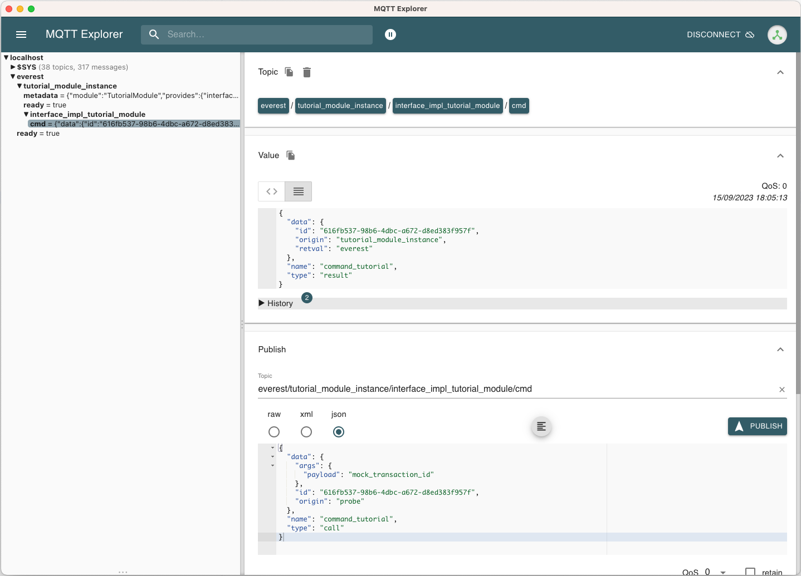

9.7. How To: Develop New Modules¶
Hint
The module concept will be improved in the next couple of months with new or changed features. We will reflect those changes in the documentation, but be aware that there might be some fragments that still show some “old style”. We would be happy if you drop us a line via the EVerest mailing list in this case.
This tutorial is meant to show how to develop your own module for the EVerest framework. This tutorial builds on knowledge that is explained in the Quick Start Guide, which is a good starting point for understanding the central concepts of modules.
9.7.1. Goal Of This Tutorial¶
In this tutorial, we will keep everything as simple as possible. You will learn the following:
Create a module that implements an interface.
Define an interface containing a simple command with parameter and return value.
Define a configuration parameter for the new module.
Configure required dependencies of the EVerest framework and modules.
Build and run.
9.7.2. Install Prerequisites¶
Please follow the Quick Start Guide to install all prerequisites into your environment.
After that, you should in particular have:
The EVerest dependency manager (check via edm –version)
The EVerest cli utility (check via ev-cli –version)
A running MQTT broker (e.g. started as container as described in the setup guide; per default expected on localhost on port 1883)
9.7.3. Workspace Setup¶
This section describes how to setup an EVerest workspace (or at least the necessary parts of it) to develop EVerest modules.
First, create a directory for your workspace. In the following, we will assume the environment variable EVEREST_WORKSPACE to hold this directory:
export EVEREST_WORKSPACE=~/ev-workspace
mkdir -p $EVEREST_WORKSPACE
Now you have two options:
9.7.3.1. Alternative 1: Setup Workspace via EVerest Dependency Manager¶
Use the EVerest dependency manager to setup your workspace. This has the benefit of allowing your to select a specific snapshot (see the corresponding docs for details), as well as it is a single command:
edm init --workspace $EVEREST_WORKSPACE
9.7.3.2. Alternative 2: Clone required repositories¶
If you want to restrict yourself only to the required dependencies, you may also just clone those:
git clone https:///github.com/EVerest/everest-cmake ${EVEREST_WORKSPACE}/everest-cmake
git clone https:///github.com/EVerest/everest-framework ${EVEREST_WORKSPACE}/everest-framework
9.7.4. Create Module Skeleton¶
The following describes how to define the fundamental skeleton of a module. This includes configuration files and the auto-generation of source files.
First, create an empty folder that is to contain your module. In the following, we assume the environment variable EVEREST_TUTORIAL_DIR to hold this directory, for example:
export EVEREST_TUTORIAL_DIR=~/everest-tutorial-module
git clone https://github.com/EVerest/everest-template $EVEREST_TUTORIAL_DIR
This provides you in particular with the .clang-format and .eslintrc.json files.
Note
You may want to change the origin remote in this git repository if you are going to use it further on. See suitable Git documentation how to do that. You might also want to check that you do not take the Git history of the everest-template repository with you.
9.7.4.1. Interface Configuration¶
First, we define an interface that the module provides. In this very first minimal version, the interface shall provide a single command command_tutorial that can be called by another module and will just always return the string “everest” as result. We will later give some ideas how to extend this minimal example.
We store the following interface configuration in form of a .yaml file in $EVEREST_TUTORIAL_DIR/interfaces/interface_tutorial_module.yaml:
description: The interface of the tutorial module.
cmds:
command_tutorial:
description: A command the tutorial module's interface provides. It receives a simple string.
arguments:
payload:
description: An arbitrary string that can be sent to the module.
type: string
result:
description: The answer of the module (which per default will just be "everest").
type: string
Second, we use the ev-cli tool to auto-generate header files for this interface:
cd $EVEREST_TUTORIAL_DIR && ev-cli interface generate-headers --schemas-dir $EVEREST_WORKSPACE/everest-framework/schemas interface_tutorial_module
After this, you should find the following file tree structure in your module:
.
├── build
│ └── generated
│ └── include
│ └── generated
│ └── interfaces
│ └── interface_tutorial_module
│ ├── Implementation.hpp
│ ├── Interface.hpp
│ └── Types.hpp
└── interfaces
└── interface_tutorial_module.yaml
These auto-generated header files in particular provide you with static type checks when developing against your individual interface.
Hint
It is also possible to work with Javascript or Python. At this point we will focus on C++.
9.7.4.2. Module Configuration¶
Next, we will define our module’s manifest.
For this, we create a module directory:
mkdir -p $EVEREST_TUTORIAL_DIR/modules/TutorialModule
and in it, create file
$EVEREST_TUTORIAL_DIR/modules/TutorialModule/manifest.yaml with the
following content:
description: The Everest Tutorial Module
config:
config_tutorial_switch:
description: A boolean configuration parameter.
type: boolean
default: false
provides:
interface_impl_tutorial_module:
interface: interface_tutorial_module
description: An actual implementation in your module of "interface_tutorial_module" interface.
metadata:
license: https://spdx.org/licenses/Apache-2.0.html
authors:
- <Your Name>, <Your Organization>
In particular, this manifest declares the following:
A boolean configuration parameter config_tutorial_switch of the module we can define later at runtime.
The module will implement the interface_tutorial_module interface (that we have defined before). We give this implementation the name interface_impl_tutorial_module.
Again, we use the EVerest cli tool to auto-generate code from this configuration:
cd $EVEREST_TUTORIAL_DIR && ev-cli module create --schemas-dir $EVEREST_WORKSPACE/everest-framework/schemas TutorialModule
After that, you should have the following file structure:
.
├── build
│ └── generated
│ (...)
├── config
├── interfaces
│ └── interface_tutorial_module.yaml
└── modules
└── TutorialModule
├── CMakeLists.txt
├── TutorialModule.cpp
├── TutorialModule.hpp
├── doc.rst
├── docs
│ └── index.rst
├── interface_impl_tutorial_module
│ ├── interface_tutorial_moduleImpl.cpp
│ └── interface_tutorial_moduleImpl.hpp
└── manifest.yaml
Let us point out a few particularly important files:
TutorialModule{.hpp,.cpp}:
This provides the module’s callbacks called by the EVerest framework at startup, more precisely in initialization and system-ready state. Here, the auto-generated implementation already calls the respective callbacks of its interface implementations.
Among others, you’ll furthermore find the module’s configuration and a pointer to the interface implementations.
interface_impl_tutorial_module/interface_tutorial_moduleImpl{.hpp,.cpp}: For each interface implementation (here, only a single one is defined), the respective header and source files are generated.
The header file declares particular spots for non-auto-generated code.
Observe that the default implementation of the handler of the command_tutorial coincidentally already satisfies this tutorial’s needs:
std::string interface_tutorial_moduleImpl::handle_command_tutorial(std::string& payload) {
// your code for cmd command_tutorial goes here
return "everest";
}
9.7.5. Build Configuration & Build¶
This section describes the additional steps needed to build your project and install it.
9.7.5.1. Adding CMakeLists.txt in the root directory¶
The $EVEREST_TUTORIAL_DIR/CMakeLists.txt file in the root of your project
repository will need to import some build commands from the framework, as well
as link to its dependencies. A fairly simple file that includes
everest-core into the build would look as follows:
cmake_minimum_required(VERSION 3.14.7)
project(everest-tutorial VERSION 0.1
DESCRIPTION "EVerest tutorial modules"
LANGUAGES CXX C)
find_package(everest-cmake 0.1 REQUIRED
COMPONENTS bundling
PATHS ../everest-cmake
)
# options
option(BUILD_TESTING "Run unit tests" OFF)
option(CMAKE_RUN_CLANG_TIDY "Run clang-tidy" OFF)
# dependencies
if (NOT DISABLE_EDM)
evc_setup_edm()
else()
find_package(everest-core)
# InfyPowerACDC uses pal-sigslot
find_package(PalSigslot REQUIRED)
endif()
ev_add_project()
# config (not needed if you do not need a run script for your configuration)
# add_subdirectory(config)
# configure clang-tidy if requested
if(CMAKE_RUN_CLANG_TIDY)
message("Enabling clang-tidy")
set(CMAKE_CXX_CLANG_TIDY clang-tidy)
endif()
# testing
if(BUILD_TESTING)
include(CTest)
set(CMAKE_BUILD_TYPE Debug CACHE STRING "Build type" FORCE)
evc_include(CodeCoverage)
append_coverage_compiler_flags()
add_subdirectory(tests)
setup_target_for_coverage_gcovr_html(
NAME gcovr_coverage
EXECUTABLE test_config
DEPENDENCIES test_config everest
)
setup_target_for_coverage_lcov(
NAME lcov_coverage
EXECUTABLE test_config
DEPENDENCIES test_config everest
)
endif()
9.7.5.2. Adding modules/CMakeLists.txt¶
Next, $EVEREST_TUTORIAL_DIR/modules/CMakeLists.txt essentially tells CMake
where to look for modules, in order to add them to the build.
It contains a single line per module. To proceed, create the file and then add the following line, as per our example:
ev_add_module(TutorialModule)
Note that you could also develop several modules at once in your repository. In that case you would add a respective ev_add_module(<MODULE_NAME>) line for each of those.
9.7.5.3. Adding dependencies.yaml¶
The find-package() CMake directive found in the previous sections is
handled by EDM.
In order for this to work, you need to add a dependency file for EDM, called
dependencies.yaml, in the project root directory. For example, listing
only everest-core as a dependency looks like this:
---
everest-core:
git: https://github.com/EVerest/everest-core.git
git_tag: main
With the above setup taken care of, you are now ready to build the project.
9.7.5.4. Building¶
When you auto-generated the code for the interfaces and modules, a build/
directory should have appeared.
You can also build the project there - go to it, and configure the build:
cd $EVEREST_TUTORIAL_DIR/build
CMAKE_PREFIX_PATH=$EVEREST_WORKSPACE cmake --install-prefix $EVEREST_TUTORIAL_DIR/dist ..
Here, we added two instructions to cmake:
Setting CMAKE_PREFIX_PATH=$EVEREST_WORKSPACE allows cmake to find the
everest-cmakerepository in the workspace.Specifying the –install-prefix allows you to specify where the finished binaries will be placed, e.g. into the
dist/folder in the modules repository. EVerest can be installed system wide (e.g. intousers/local/bin), but this usually requires sudo permissions.
Then, build and install the project:
cd $EVEREST_TUTORIAL_DIR/build
make -j <number of parallel jobs>
And finally, install the binaries:
make install -j <number of parallel jobs>
If everything worked smoothly so far, your modules are installed and ready to run.
9.7.6. Run Configuration & Run¶
9.7.6.1. EVerest configuration¶
The final step to run EVerest and testing the new module is to define an
EVerest run configuration. For this, create a file
$EVEREST_TUTORIAL_DIR/config/config-modules-tutorial.yaml with the following
content:
active_modules:
tutorial_module_instance:
module: TutorialModule
This provides a very minimalistic run configuration for EVerest telling to run with a single module, namely the newly created one.
9.7.6.2. Adding and activating config/CMakeLists.txt¶
The EVerest cmake utils provide a function to auto-generate run scripts for your configurations.
In order to achieve this, create the file $EVEREST_TUTORIAL_DIR/config/CMakeLists.txt with content:
generate_config_run_script(CONFIG modules-tutorial)
Here, the generate_config_run_script(<CONFIG_NAME>) expects the existence of
a file config-<CONFIG_NAME>.yaml.
It will then generate a run script for this configuration.
You must then “activate” this configuraton by adapting the
$EVEREST_TUTORIAL_DIR/CMakeLists.txt file removing the commenting #
before the add_subdirectory(config) instruction, i.e.:
# config # (not needed if you do not need a run script for your configuration) add_subdirectory(config)
After that, once more run cmake:
cd $EVEREST_TUTORIAL_DIR/build
CMAKE_PREFIX_PATH=$EVEREST_WORKSPACE cmake --install-prefix $EVEREST_TUTORIAL_DIR/dist ..
make
make install
9.7.6.3. Running EVerest¶
The step before should have created a file
$EVEREST_TUTORIAL_DIR/build/run-scripts/run-modules-tutorial.sh.
Up to path substitution this will have the following content:
LD_LIBRARY_PATH=$EVEREST_TUTORIAL_DIR/dist/lib:$LD_LIBRARY_PATH \
PATH=$EVEREST_TUTORIAL_DIR/dist/bin:$PATH \
manager \
--prefix $EVEREST_TUTORIAL_DIR/dist \
--conf $EVEREST_TUTORIAL_DIR/config/config-modules-tutorial.yaml
It puts the compiled libraries and binaries into the respective paths, and then runs EVerest by calling the manager binary with the respective configuration.
Importantly, the configuration must not be known before runtime (since also in our example it was only used to generate the run script, not to build the project!).
Executing run-modules-tutorial.sh then should start EVerest, and provide
an output similar to:
YYYY-MM-DD 00:00:12.500139 [INFO] manager :: 8< 8< 8< ------------------------------------------------------------------------------ 8< 8< 8<
YYYY-MM-DD 00:00:12.500327 [INFO] manager :: EVerest manager starting using /home/everest/everest-module-tutorial/config/config-modules-tutorial.yaml
YYYY-MM-DD 00:00:12.500354 [INFO] manager :: EVerest using MQTT broker localhost:1883
YYYY-MM-DD 00:00:12.799618 [INFO] everest_ctrl :: everest controller process started ...
YYYY-MM-DD 00:00:12.799822 [INFO] everest_ctrl :: Launching controller service on port 8849
YYYY-MM-DD 00:00:13.120267 [INFO] tutorial_module :: Module tutorial_module_instance initialized.
YYYY-MM-DD 00:00:13.149934 [INFO] manager :: >>> All modules are initialized. EVerest up and running <<<
If your socket can’t be connected, make sure that your MQTT brocker is running.
9.7.7. Observing the System¶
In this final section we describe how to observe the behavior of your module and debug it.
9.7.7.1. Exploring with MQTT Explorer¶
The open-source tool MQTT Explorer can be utilized to observe the module communication in EVerest.
With your MQTT broker running on localhost:1883, you should be able to connect right away when opening MQTT explorer.
Then start (or re-start) the EVerest manager (as described above). You should notice an everest topic popping up.
We can now publish a command to our self-written module. For this, choose the topic:
everest/tutorial_module_instance/interface_impl_tutorial_module/cmd
and publish the JSON:
{
"data": {
"args": {
"payload": "Hello World!"
},
"id": "00000000-0000-0000-0000-000000000042",
"origin": "manual_test"
},
"name": "command_tutorial",
"type": "call"
}
Our module should return with a “everest” response (you may have to reselect the everest/tutorial_module_instance/interface_impl_tutorial_module/cmd on the left to refresh this view.
9.7.7.2. Debugging¶
At the latest when you start developing an actual module, it might come handy to be able to debug your code. Thus, the following shall provide some rudimentary steps to do so.
1) Rebuild with debug flags enabled
Rerun Cmake, this time with -DCMAKE_BUILD_TYPE=Debug, and rebuild:
cd $EVEREST_TUTORIAL_DIR/build
CMAKE_PREFIX_PATH=$EVEREST_WORKSPACE cmake --install-prefix $EVEREST_TUTORIAL_DIR/dist -DCMAKE_BUILD_TYPE=Debug ..
make -j <number of parallel jobs>
2) Start EVerest with your module with your module marked as “standalone”
With EVerest built as described before, but with the additonal option
--standalone tutorial_module_instance:
LD_LIBRARY_PATH=$EVEREST_TUTORIAL_DIR/dist/lib:$LD_LIBRARY_PATH \
PATH=$EVEREST_TUTORIAL_DIR/dist/bin:$PATH \
manager --prefix $EVEREST_TUTORIAL_DIR/dist --conf $EVEREST_TUTORIAL_DIR/config/config-modules-tutorial.yaml --standalone tutorial_module_instance
This starts EVerest, but without your module. Instead, the output contains a line:
manager :: Not starting standalone module: tutorial_module_instance
Also, so far the output should be missing the All modules are initialized. EVerest up and running
notification, since it keeps waiting for your module
to spin up.
3) Start your module with a debugger:
Now open a second terminal (while keeping EVerest running in the frist
terminal), and start your module via gdb:
cd $EVEREST_TUTORIAL_DIR/build
gdb --args ./modules/TutorialModule/TutorialModule --module tutorial_module_instance --conf $EVEREST_TUTORIAL_DIR/config/config-modules-tutorial.yaml --prefix $EVEREST_TUTORIAL_DIR/dist
In gdb, we set a break in the line that returns the payload when your test command is hit. We then run the program (you might need to adjust the line number):
break modules/TutorialModule/interface_impl_tutorial_module/interface_tutorial_moduleImpl.cpp:17
run
After the run command, you should notify in your Everest terminal that all
modules have now started. You may now again use MQTT Explorer as before and
send a command call via MQTT, this should hit your set breakpoint with a
output similar to:
Thread 4 "tutorial_module" hit Breakpoint 1, module::interface_impl_tutorial_module::interface_tutorial_moduleImpl::handle_command_tutorial (this=0xaaaaaad24fc0, payload="mock_transaction_id") at /tmp/everest-tutorial-verify/modules/TutorialModule/interface_impl_tutorial_module/interface_tutorial_moduleImpl.cpp:17
17 return "everest";
Of course, you might setup your favorite IDE in a similar way for a nicer debugging experience.
9.7.8. Exemplary Module Customizations¶
Having prepared a buildable and runnable module, we can now extend the logic
of our implementation:
* Add a variable to your interface, and publish it;
* Add a second module which requires the interface_tutorial_module interface and sends commands or subscribes to variables.
Hint
This section is yet to come. Want to help us with that? Feel free and create a suggestion for this.